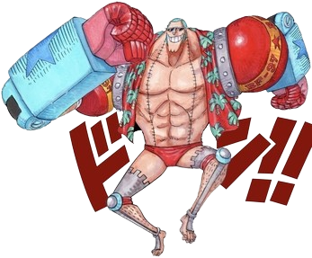

Role: Shipwright
Bounty: 394,000,000 Berries
Description: A cyborg shipwright who built the Thousand Sunny. His goal is to build a ship that can sail to the end of the world.

His bounty updated after defeating Sasaki in Onigashima.